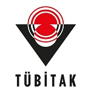

Welcome to the ICAAM 2024 Conference
Antalya, Türkiye
The Organizing Committee of ICAAM, Bahcesehir University, Türkiye, Institute of Mathematics and Mathematical Modelling, Kazakhstan, and Analysis & PDE Center, Ghent University, Belgium are pleased to invite you to the Seventh International Conference on Analysis and Applied Mathematics, ICAAM 2024. The meeting will be held from September 23 to 28, 2024, in Antalya, Türkiye.
This conference is supported by the Public Foundation "Galym Project," Almaty, Kazakhstan.
This conference is supported by The Scientific and Technological Research Council of Türkiye (TÜBİTAK) under the 2223-B Grant Program.
The conference is organized biannually. Previous conferences were held in
- Gumushane, Türkiye in 2012,
- Shymkent, Kazakhstan in 2014,
- Almaty, Kazakhstan in 2016,
- Lefkoşa (Nicosia), Mersin 10, Türkiye in 2018,
- Girne (Kyrenia), Mersin 10, Türkiye in 2020,
- Antalya, Türkiye in 2022.
We are pleased to invite you to the seventh conference which is focused on various topics of analysis and its applications, applied mathematics, and modeling (see the detailed list*).
The conference will consist of plenary lectures, mini symposiums, and contributed oral presentations.
All proceedings of ICAAM (2012-2022) were published in AIP (American Institute of Physics) Conference Proceedings. We are also in contact with AIP to publish the proceedings of ICAAM 2024 to be included in the AIP Conference Proceeding Series.
Selected full papers from this conference will be published in peer-reviewed journals.
We are looking forward to welcoming you to Antalya, Türkiye.
About ICAAM
International Conference on Analysis and Applied Mathematics (ICAAM) aims to bring mathematicians working in the area of analysis and applied mathematics together to share new trends of applications of mathematics. In mathematics, the developments in the field of applied mathematics open new research areas in analysis and vice versa. That is why we planned the conference series to provide a forum for researchers and scientists to communicate their recent developments and present their original results in various fields of analysis and applied mathematics.
The main organizers of the conference are:
- Bahcesehir University, Türkiye,
- Institute of Mathematics and Mathematical Modeling, Almaty, Kazakhstan
- Analysis & PDE Center, Ghent University, Ghent, Belgium
The conference is held with the support of the Public Foundation "Galym Project," Almaty, Kazakhstan.
|
NEWS - ANNOUNCEMENTS |
|
* ABSTRACT BOOK is available |
|
 This Congress is supported by The Scientific and Technological Research Council of Türkiye (TÜBİTAK) under the 2223-B Grant Program. Within the scope of the program, support is given to meetings such as congresses, conferences, colloquiums, symposiums and workshops (including those to be held online) in order to meet scientists working in different institutions, share knowledge and experience, and prepare the ground for multidisciplinary and interdisciplinary studies. |
| This conference is supported by the Public Foundation "Galym Project," Almaty, Kazakhstan |
|
* Participants from Russia who wish to make a mail order for accommodation can directly contact Mr. Özer via WhatsApp at +90 549 840 45 62. |
* Journal of
Mathematical Sciences (SERIES
A) Submission is OPEN - Special Issue: Recent Advances in Analysis and Applied Mathematics
|
* AIP PAPERS
(EXTENDED ABSTRACTS)
-- Submission is OPEN |